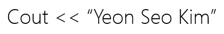
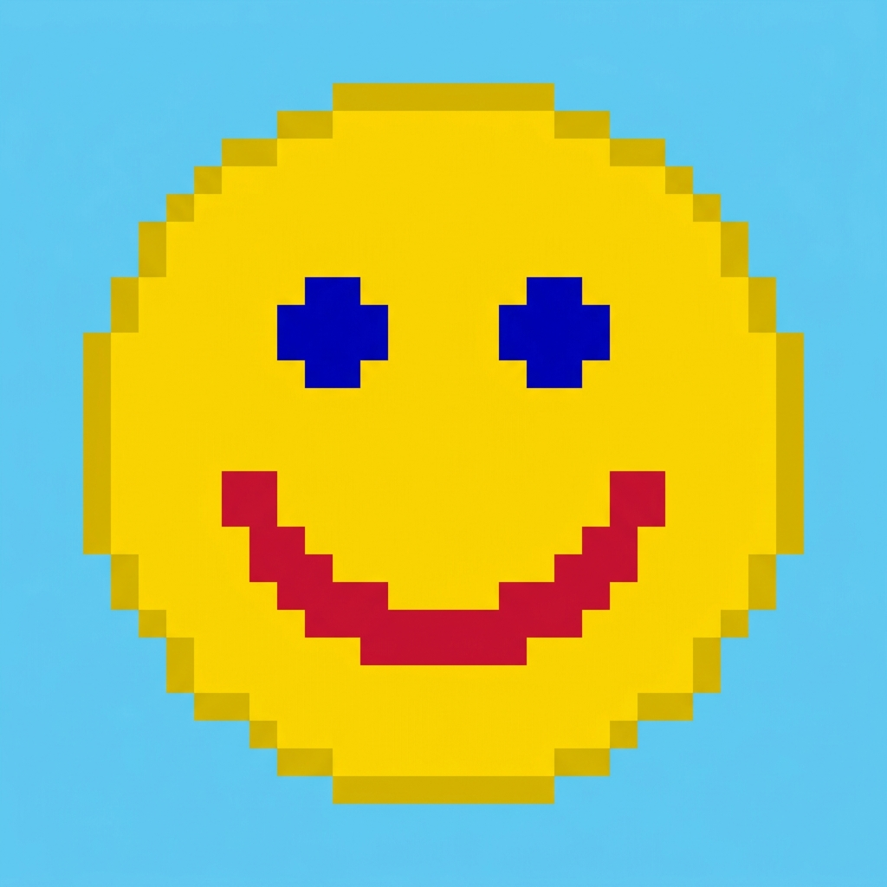

3D Graphics

This project serves as an introductory graphics demo that sets up an OpenGL abstraction layer. It initializes an animated 2D quad displaying custom textures and vertex colors, providing a foundation for more complex graphics assignments in CS250.
Learning to wrap raw OpenGL calls into RAII-compliant classes provides a safer abstraction that prevents resource leaks and state binding errors. One of the challenges was correctly mapping vertex buffer attributes. Working with both WebGL and Desktop OpenGL simultaneously also required ensuring we only use compatible API calls, setting a great baseline for future projects.